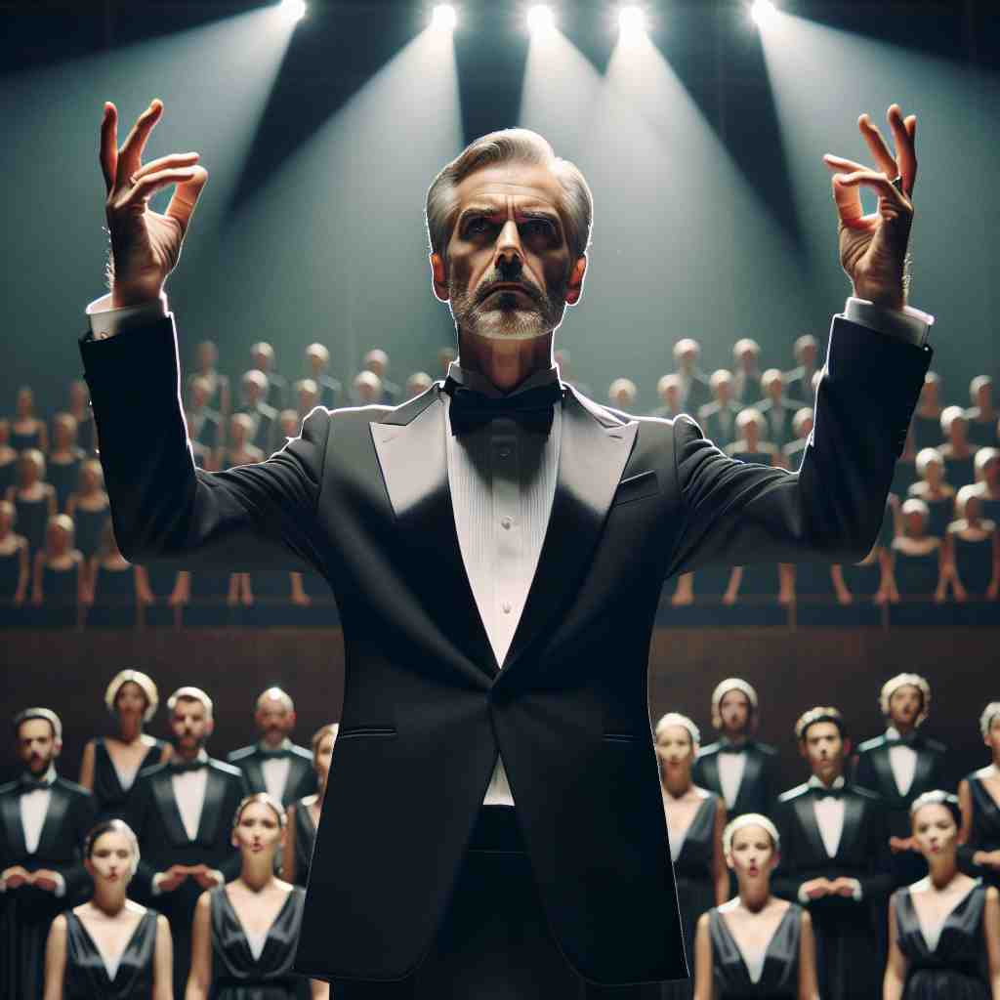

💬 The film director is giving instructions to the actors. 电影导演正在给演员们下达指示。

💬 The business director is explaining the growth strategy to the team. 业务总监正在向团队解释增长战略。

💬 The stage director gave clear instructions to the choir. 舞台导演向合唱团下达了明确的指示。
💬 The film director is giving instructions to the crew. 电影导演正在给剧组下指令。
🧠 想象一个"director"站在高处，用手指向不同方向来指导他人。无论是公司、电影、董事会还是乐团，"director"都是在其领域中起指导和引领作用的人。这个核心概念贯穿了"director"的各种用法，帮助你更容易记住和理解它的多重含义。
🔈 [daɪˈrektə(r)][dɪ‑]
🗝️ n. a person who is in charge of an activity, organization, or business 负责某项活动、组织或业务的人
🎭 在一个大型公司的会议室里，所有部门经理都汇聚一堂，等待会议开始。会议室前端，一个自信的中年人站了起来，他就是公司的总监。随着他宣布年度战略计划，每个人都专注地听着，因为他负责监督整个公司运营，以及做出关键决策。
💬 She is the director of a large marketing company. 她是一家大型营销公司的董事。
🌳 由词根 "direct"（指导、引导）和后缀 "-or"（表示执行某种动作的人）组成，表示 "负责指导或管理某项事务的人"。
🕸️ 1.direct: 引导 2.direction: 方向 3.directive: 指令
💡 记忆 "director" 时，可以联想 "direct"（引导）加上 "-or"（人）= "指导的人"，把这个词理解为一个负责引导团队或项目的人。